Foundations
Understand systems and build a shared language.
Four pathways. One community.
Every community challenge is explored through four complementary lenses: experience, fairness, innovation, and sustainability.
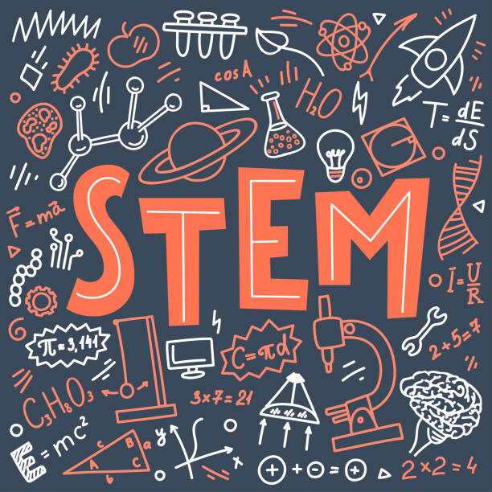
STEMHow does this system work and how can we improve it?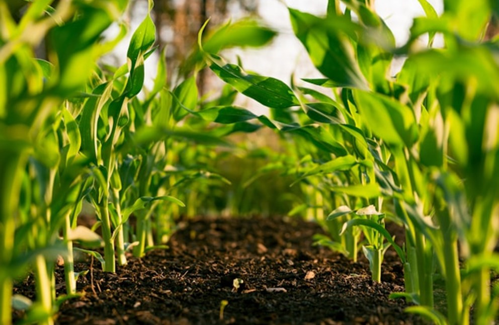
Food System and AgricultureHow does this system sustain life?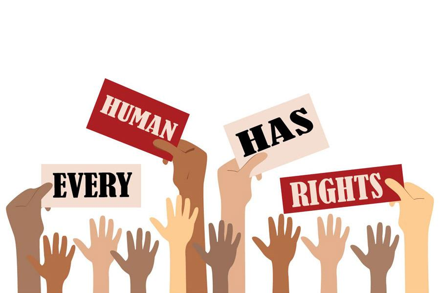
Human Rights and AdvocacyIs this system fair for everyone, and how can we advocate for change?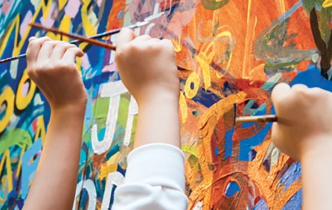
Visual and Performing ArtsHow do people experience, express, and reimagine this system?The Civic Design Studio
Learning happens in the community through research, storytelling, mapping, design challenges, and public action.
Understand systems and build a shared language.
Investigate relationships, patterns, assets, and challenges.
Create projects, solutions, and meaningful interventions.
Become civic stewards who can independently shape systems.
Youth-Led Master Plan | 2026–2035
Volume I creates the roadmap. The following nine volumes bring that roadmap to life through youth-led learning, implementation, reflection, and community transformation.
Explore community history, identify assets, listen to residents, map systems, and define opportunities.
A Youth-Led Civic Design Initiative
Commonfolk Republic is a community learning framework that transforms education into community development. Scholars become designers, researchers, storytellers, innovators, and leaders shaping the future of their communities.
A vision rooted in justice, equity, dignity, belonging, sustainability, and shared responsibility.
Local projects connect to the United Nations Sustainable Development Goals.
A ten-year roadmap created by scholars to study, design, and improve community systems.
A project-based learning model where scholars investigate real challenges and create solutions.
Youth, families, educators, artists, institutions, and partners learn and build together.
Season One | Summer 2026
Every project contributes to the Youth-Led Master Plan.
Local Youth. Global Perspectives.
Scholars connect with international guests to learn about communities, cultures, challenges, innovations, and shared human experiences.
Think globally. Design locally.
Hope. Education. Action.
Freedom Schools Kalamazoo envisions a beloved community where every child develops a lifelong love of learning, becomes a confident leader, and has opportunities to create positive social change.
Our mission is to empower scholars through culturally responsive literacy, civic design, leadership development, STEM, arts, human rights, food systems, and community engagement.
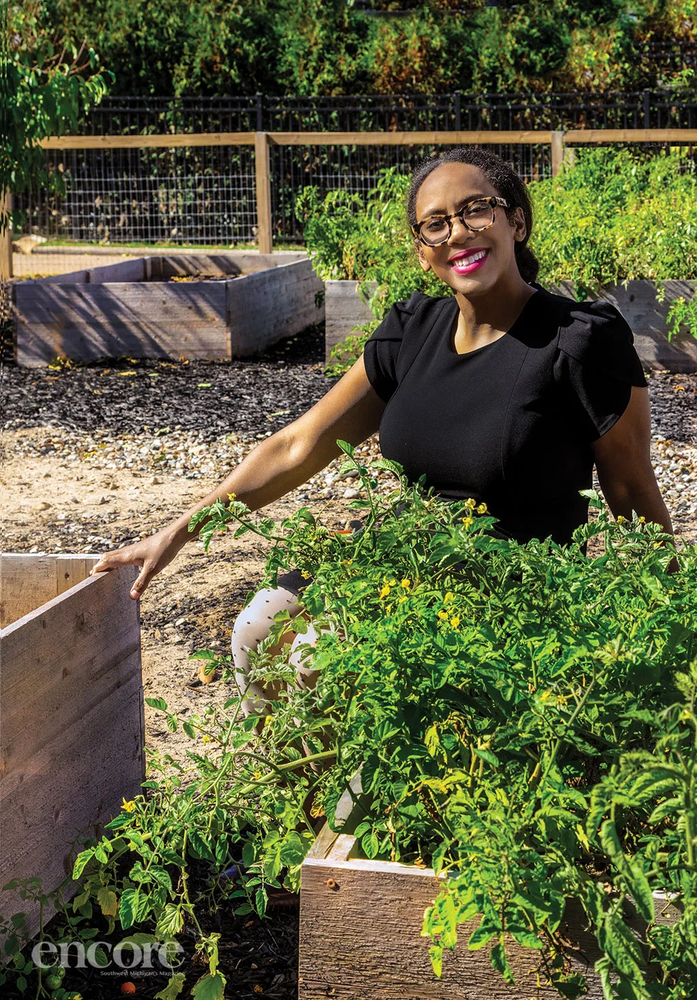
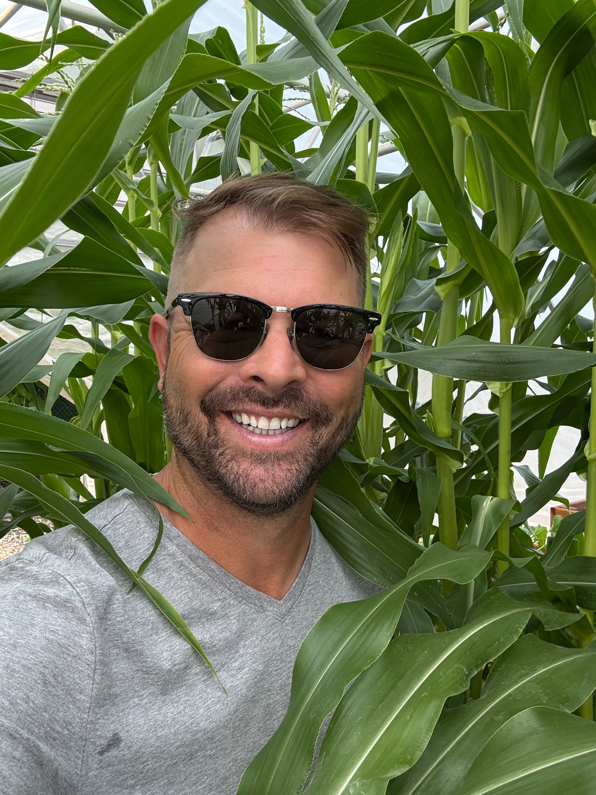
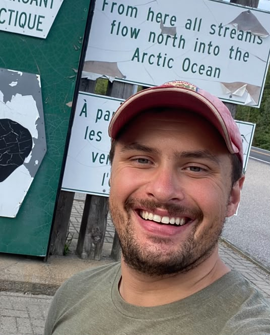
Site Coordinator
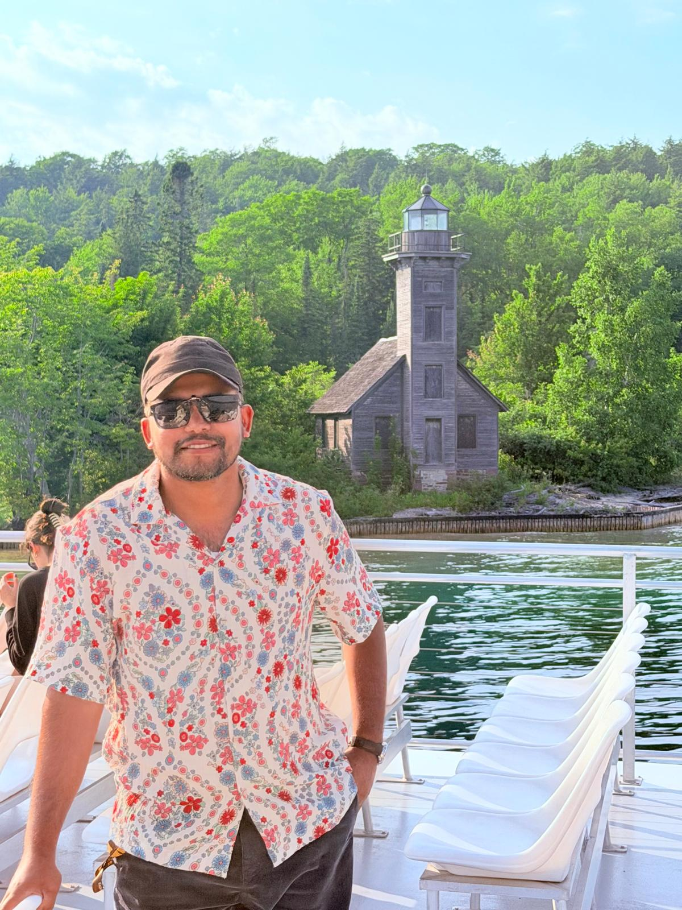
Site Coordinator
Servant Leader Intern(Level 1)
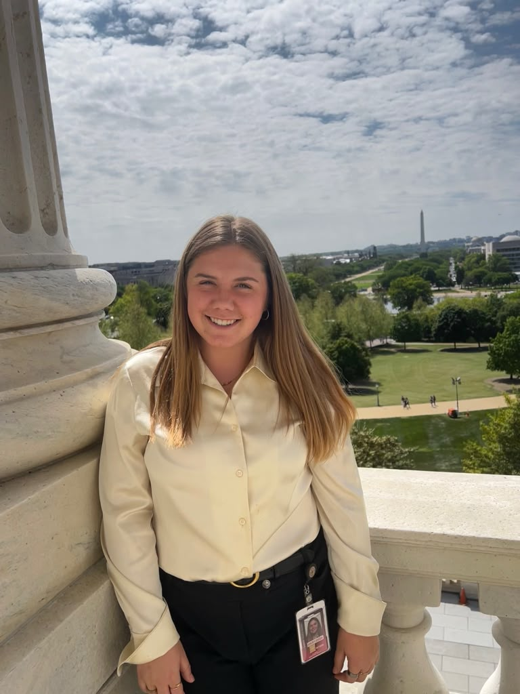
Servant Leader Intern(Level 2)
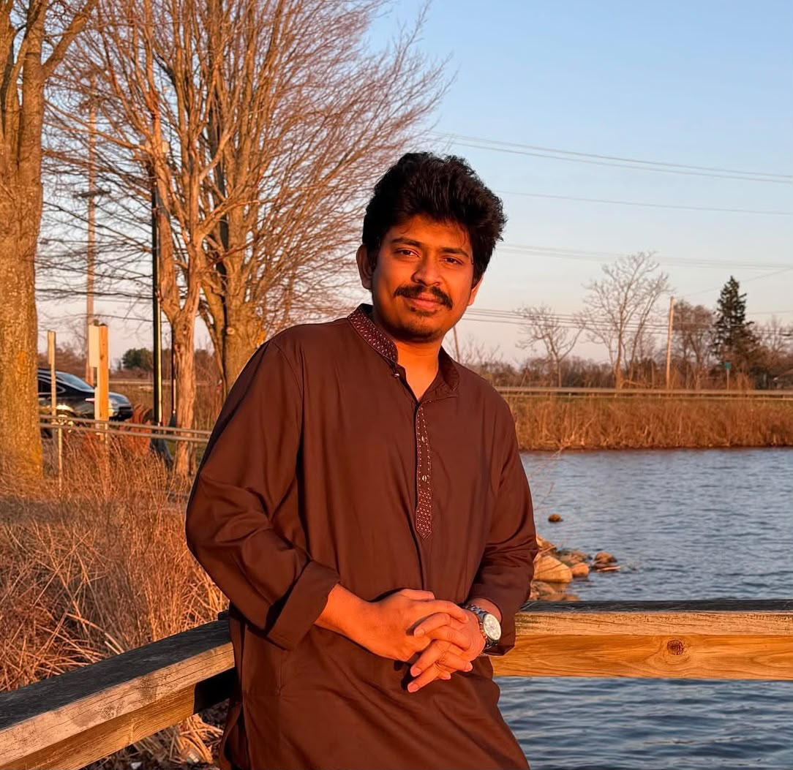
Servant Leader Intern(Level 2)
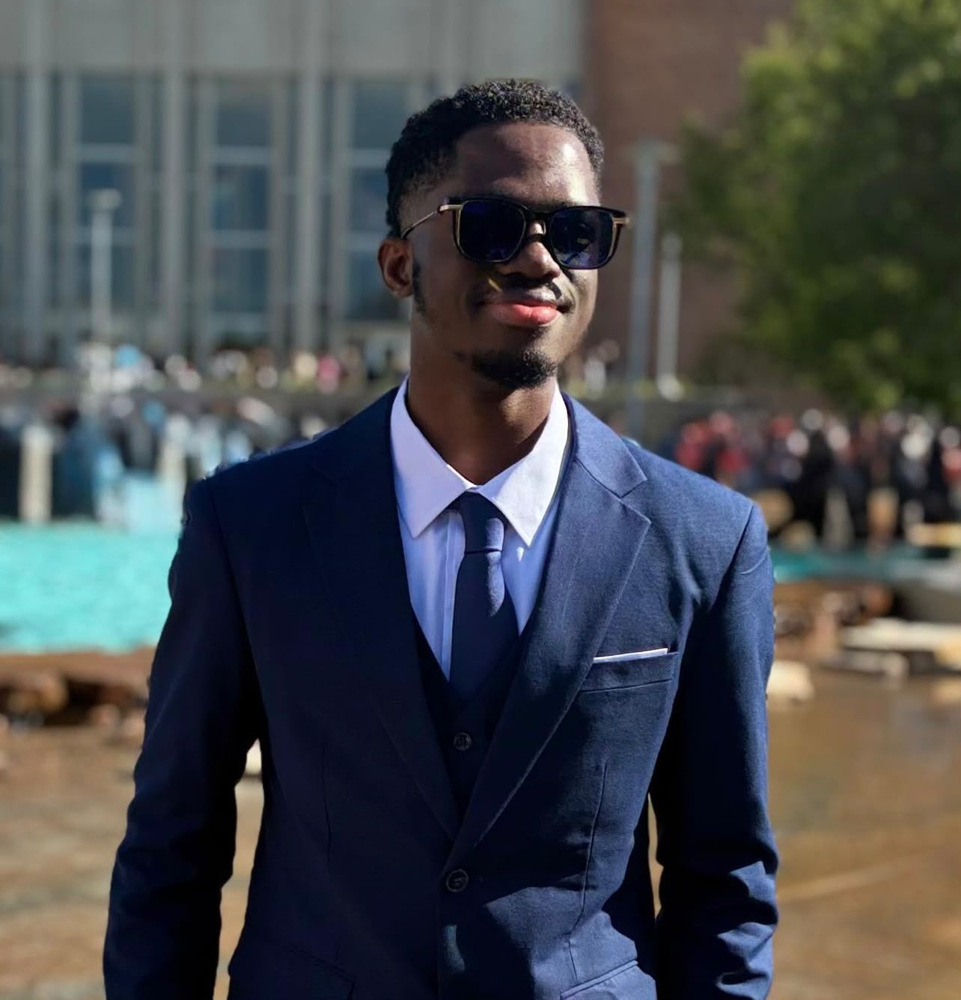
Servant Leader Intern(Level 3)
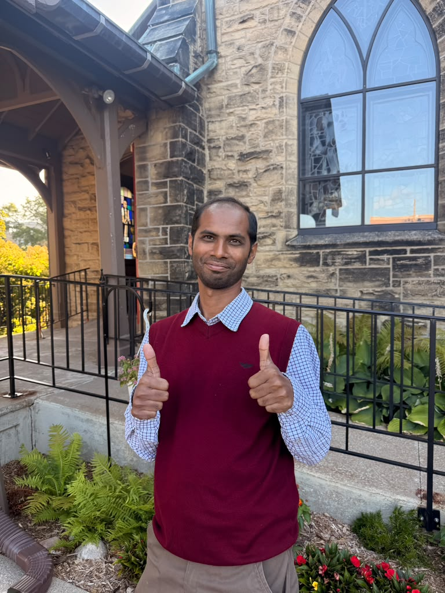
Servant Leader Intern(Level 4)
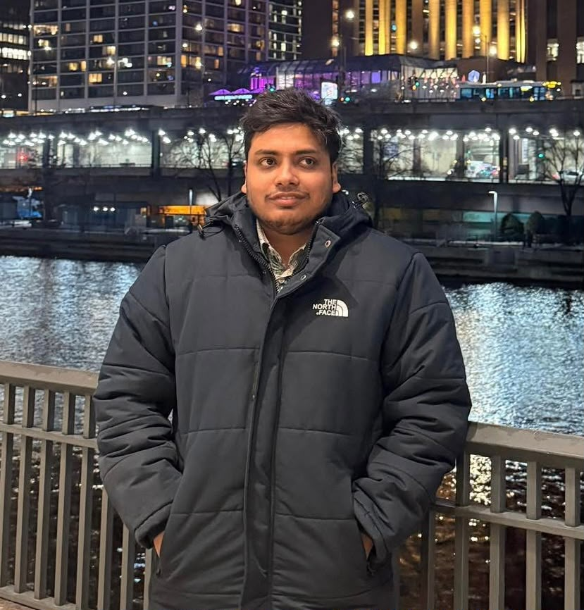
Servant Leader Intern(Afternoon Activity)
One Ecosystem. Shared Purpose.
Connecting youth, families, arts, culture, civic engagement, and neighborhood-based learning.
A nationally recognized model supporting literacy, leadership development, and civic engagement.
Research-based curriculum, experiential learning, and university-community partnership.
Join our movement for youth. Sign up for updates about our programs, projects, and ways to support scholars.